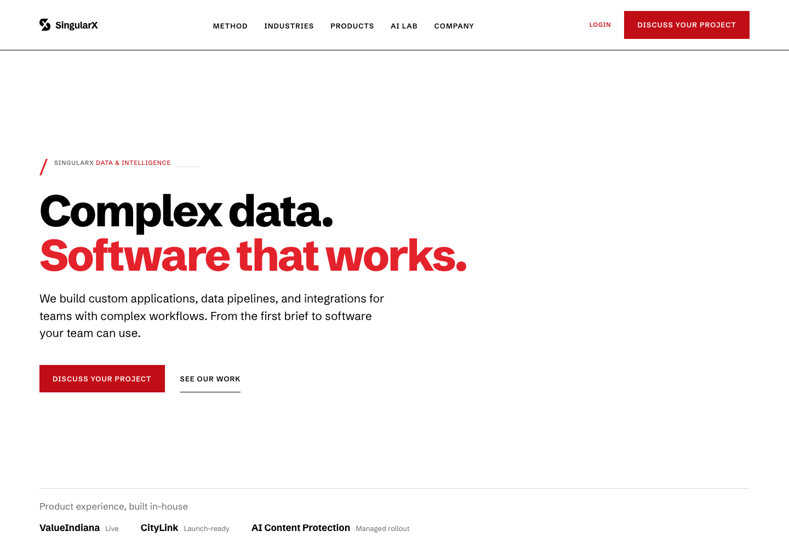

A public front door for SingularX.
The company website introduces SingularX’s products and services and gives prospective clients a place to learn about the work.
My contribution
I built the SingularX website as part of my engineering work at the company. The implementation uses Next.js and React, with account, payment, and real-time functionality.
This sits alongside my role leading CityLink development. The company’s products and positioning are shared work; this story describes my website development contribution.
See the live site.
Explore the public product pages and company overview on the live website.
